양장기능사 (2015-04-04 기출문제)
1과목: 임의 구분
1. 상체가 곧고 가슴이 높게 솟아 있으며 엉덩이는 풍만하고 배가 평편한 자세의 체형은?
- 굴신체
- 반신체
- 비만체
- 후신체
(정답률: 82%)

2. 시접을 가르거나 한쪽으로 꺾어 위로 울러 박는 바느질은?
- 가름솔
- 통솔
- 뉜솔
- 쌈솔
(정답률: 76%)
3. 엉덩이가 나오고 복부가 들어간 체형의 보정방법으로 가장 옳은 것은?
- 앞 원형의 H.L 위쪽에서 옆선을 내어 그려서 품을 넓히고 다트 분량도 늘려 준다.
- 뒤 원형의 H.L 위쪽에서 옆선을 내어 그려서 품을 넓히고 다트 분량도 늘려준다.
- H.L을 절개하여 뒤는 늘리고, 앞은 접어 줄인다.
- 뒤 허리선을 내려 주고, 뒤 다트 길이를 길게 한다.
(정답률: 69%)
4. 제도에 필요한 부호 중 늘림에 해당하는 것은?
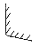
(정답률: 97%)
5. 플레어의 너비를 디자인에 따라 정하는 형으로 각도를 다양하게 구성하는 방법으로, 먼저 플레어의 각도를 정하고 절개선을 끝까지 절개하여 기본 다트를 자르고 각도에 맞게 허리둘레선을 정하고 밑단을 정리하는 스커트는?
- A라인 플레어 스커트
- 벨 플레어 스커트
- 세미 서큘러 플레어 스커트
- 요크를 댄 플레어 스커트
(정답률: 57%)
6. 세트 인 소매(set-in sleeve) 가 아닌 것은?
- 퍼프 슬리브(puff sleeve)
- 랜턴 슬리브(lantern sleeve)
- 래그런 슬리브(raglan sleeve)
- 케이프 슬리브(cape sleeve)
(정답률: 71%)
7. 의복 제작 시 평면적인 옷감을 입체화하기 위해서 옷감을 오그려야 할 부분은?
- 소매의 앞
- 바지의 밑위
- 앞 가슴
- 어깨
(정답률: 63%)
8. 심감의 기본 시접 중 목둘레의 시접 분량으로 가장 적합한 것은?
- 0.5cm
- 1cm
- 1.5cm
- 2cm
(정답률: 92%)
9. 다림질 시 지나친 가열로 일어나는 옷감의 변화에 해당되지 않는 것은?
- 팽창
- 경화
- 융용
- 변색
(정답률: 81%)
10. 순면 심지의 특징에 대한 설명 중 틀린 것은?
- 수축성이 적고 형태의 지속성이 우수하다.
- 열광이나 땀에 의해 변색되지 아니한다.
- 탄력성이 풍부하고 구김회복성이 우수하다.
- 대전성이 없으므로 더러움을 잘 타지 아니한다.
(정답률: 53%)
11. 플레어 스커트를 비이어스로 재단할 때 정바이어스로서 플레어가 바르게 구성될 수 있는 각으로 가장 적합한 것은?
- 30˚
- 45˚
- 60˚
- 90˚
(정답률: 86%)
12. 가봉 시 의복 시착 후 관찰 항목으로 가장 거리가 먼 것은?
- 전체적인 실루엣
- B.P의 위치
- 시접 방향
- 가슴둘레의 여유분
(정답률: 87%)
13. 어깨너비의 치수를 재는 방법으로 가장 옳은 것은?
- 좌우 어깨점과 가슴너비점을 지나는 라인의 직선거리를 잰다.
- 좌우 어깨점과 목앞점을 지나는 선을 따라 체표면을 잰다.
- 좌우 어깨 끝점 사이의 길이를 뒤에서 잰다.
- 좌우 옆목점을 지나며 좌우 어깨점의 너비를 잰다.
(정답률: 71%)
14. 다음 그림과 같은 스커트의 구성방법에 해당하는 스커트는?
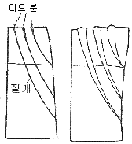
- 랩 스커트(wrap skirt)
- 드레이프 스커트(draped skirt)
- 디바이디드 스커트(divided skirt)
- 개더 스커트(gather skirt)
(정답률: 67%)
15. 손바느질 방법 중 바늘땀을 되돌아와 뜨는 바느질은?
- 홈질
- 섰음질
- 박음질
- 시침질
(정답률: 79%)
16. 길과 연결되어 목 위로 올ㄹ가게 되는 네크라인은?
- 스퀘어 네크라인(square neckline)
- 카울 네크라인(cowl neckline)
- 하이 네크라인(high neckline)
- 브이 네크라인(V neckline)
(정답률: 89%)
17. 재단 공정 중 마커(marker)의 설명으로 틀린 것은?
- 패턴지에 명시되어 있는 경사, 위사, 바이어스 등의 방향을 지킨다.
- 천의 표면이 결이 있는 직물일 경우 양방향으로 패턴을 배열한다.
- 재단선은 최소한의 가는 선을 이용한다.
- 패턴의 배열은 큰 패턴부터 배치한다.
(정답률: 79%)
18. 너비 110cm의 옷감으로 반소매 블라우스를 제작할 때 옷감의 필요량 계산법으로 옳은 것은?
- (블라우스 길이×4)+시접
- (블라우스 길이×2+시접
- 블라우스 길이+소매길이+시접
- 블라우스길이+시접
(정답률: 62%)
19. 길 원형의 활용 중 그림과 같이 B.P를 중심으로 이동이 된 다트의 명칭은?
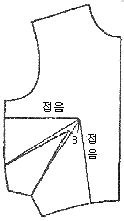
- 사이드 다트(side dart)
- 로 언더 암 다트(low under arm dart)
- 웨이스트 다트(waist dart)
- 언더 암 다트(under arm dart)
(정답률: 65%)
20. 제도에 필요한 약자의 표현으로 옳은 것은?
- B.L-허리선
- F.N.P-앞중심선
- E.L-엉덩이선
- C.B.L=뒤중심선
(정답률: 90%)
2과목: 임의 구분
21. 체형지수 중 인체충실도를 나타내는 지수로, 신장과 체중을 이용하는 지수는?
- 베르베크(Vervaeck) 지수
- 카우프(Kaup) 지수
- 롤러(Rohrer) 지수
- 리비(Livi) 지수
(정답률: 49%)
22. 인체 계측방법의 분류 중 실측법이 아닌 것은?
- 마틴식(Martin) 인체 계측법
- 슬라이딩게이지(sliding gauge)법
- 퓨즈(fuse)법
- 타이트피팅(tight fitting)법
(정답률: 40%)
23. 가슴의 유두점을 지나는 수평부위를 돌려서 재는 계측 항목은?
- 목둘레
- 등길이
- 가슴둘레
- 유두길이
(정답률: 93%)
24. 목옆점에서 유두점까지의 길이를 재는 계측 항목은?
- 앞길이
- 유두간격
- 유두길이
- 옆길이
(정답률: 88%)
25. 가봉 시 유의사항으로 옳은 것은?
- 일반적으로 오른손을 누르면서 왼쪽에서 오른쪽으로 시침한다.
- 바느질 방법은 손바느질의 상침 시침으로 한다.
- 바이어스감과 직선으로 재단된 옷감을 붙일 때는 직선감을 위로 겹쳐 놓고 바느질한다.
- 가봉할 옷을 착용하여 부분적인 실루엣을 먼저 관찰하고 전체적인 실루엣을 관찰하면서 보정해 나간다.
(정답률: 71%)
26. 타이트 스커트 뒷주름 바느질의 파단중량이 가장 큰 것은?
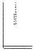
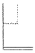
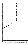
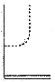
(정답률: 78%)
27. 한쪽 엉덩이가 높거나 커서 한쪽이 당길 경우의 스커트 보정 방법으로 가장 옳은 것은?
- 허리와 옆선을 내어 수정한다.
- 식서방향을 따라 절개한 후 허리선을 올려 준다.
- 당기는 부위를 파 준 후 패턴을 교정하여 허리선을 올려준다.
- 당기는 부위를 접어서 핀을 꽂아 패턴을 교정하여 허리선을 올려 준다.
(정답률: 50%)
28. 심 퍼커링(seam puckering)의 생성요인 중 기계적 요인이 아닌 것은?
- 톱니와 노루발에 의한 퍼커링
- 재봉바늘에 의한 퍼커링
- 윗실과 밑실의 장력에 의한 퍼커링
- 봉사에 의한 퍼커링
(정답률: 75%)
29. 외주름처럼 일정한 간격의 주름을 잡아서 접어 준 뒤 겉면에서 상침으로 박음질해서 고정시켜 곁에서 상침선이 보이는 장식바느질 방법은?
- 개더
- 턱
- 스모킹
- 프릴
(정답률: 69%)
30. 소매산의 높이가 높을 때의 설명으로 옳은 것은?
- 소매너비는 좁아진다.
- 활동성이 좋아진다.
- 소매너비는 넓어진다.
- 소매너비가 넓어지다가 좁아진다.
(정답률: 79%)
31. 면섬유에 좋은 방정성과 탄성을 주는 것은?
- 결절
- 겉비늘
- 천연꼬임
- 크림프
(정답률: 76%)
32. 방적성에 대한 설명 중 틀린 것은?
- 실을 뽑을 수 있는 능력을 말한다.
- 섬유는 적어도 강도가 1.5gf/d 이상이 되고, 길이가 5mm 이상이 되어야 방적의 가능성이 있다.
- 섬유가 가늘고 길더라도 표면마찰에 의한 포합성이 있어야 방적이 가능하다.
- 방적성은 섬유의 강도와 굵기와의 관계가 없다.
(정답률: 79%)
33. 실의 강도를 표시하는 리(lea) 갈력에서 리(lea)는 1.3716m(1.5야드) 둘레에 실을 몇 회 감은 것인가?
- 20회
- 50회
- 80회
- 100회
(정답률: 56%)
34. 섬유의 분류가 틀린 것은?
- 폴리우레탄 섬유-spandex
- 폴리아미드 섬유-nylon
- 폴리염화비닐 섬유-vinylon
- 폴리아크릴 섬유-saran
(정답률: 59%)
35. 면섬유가 수분을 흡수할 때 강도와 신도의 변화로 옳은 것은?
- 강도와 신도는 각각 증가한다.
- 강도와 신도는 각각 감소한다.
- 강도는 증가하나 신도는 감소한다.
- 강도는 감소하나 신도는 증가한다.
(정답률: 72%)
36. 섬유의 번수측정에 가장 적합한 표준상태의 온도와 습도는?
- 20±5℃, RH 65±5%
- 20±2℃, RH 65±2%
- 25±5℃, RH 70±2%
- 25±2℃, RH 70±2%
(정답률: 71%)
37. 면사의 방적공정에 해당되지 않는 것은?
- 소면
- 연조
- 조방
- 길링
(정답률: 60%)
38. 다음 중 일광에 대한 취화가 가장 큰 합성섬유는?
- 아크릴
- 나일론
- 폴리에스테르
- 스판덱스
(정답률: 52%)
39. 섬유를 불꽃 가까이 가져갈 때 녹으면서 오그라들지 않는 섬유는?
- 폴리에스테르
- 비스코스 레이온
- 나일론
- 아크릴
(정답률: 68%)
40. 섬유 내에서 결정이 발달할 때 향상되는 섬유의 성질은?
- 염색성
- 흡습성
- 신도
- 강도
(정답률: 54%)
3과목: 임의 구분
41. 다음 색입체의 단면도에 대한 설명으로 옳은 것은?
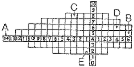
- A와 B는 보색관계이다.
- C는 D보다 채도가 높다.
- C와 D는 고명도이고 채도가 가장 높다.
- 채도와 명도가 가장 높은 곳은 E이다.
(정답률: 69%)
42. 색의 수반감정에 대한 설명으로 옳은 것은?
- 난색은 수축, 후퇴성이 있으며, 생리적, 심리적으로 긴장감을 준다.
- 색의 중량감은 명도가 가장 크게 영향을 주고 있다.
- 색의 온도감은 색상에 의해 강하게 느끼며, 명도에서는 느낄 수 없다.
- 색의 강약감은 채도보다는 주로 명도의 영향을 받는다.
(정답률: 57%)
43. 다음 중 세로선에 의한 분할 효과가 가장 약한 것은?
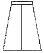
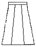
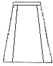
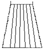
(정답률: 65%)
44. 디자인 요소가 중심점을 기준으로 방향을 바꾸어 반복됨으로써 얻어지는 리듬은?
- 연속 리듬
- 교대반복 리듬
- 단순반복 리듬
- 방사상 리듬
(정답률: 52%)
45. 다음 중 고결, 희망을 나타내며, 상승감과 긴장감을 주는 선은?
- 사선
- 수직선
- 수평선
- 지그재그선
(정답률: 67%)
46. 다음 중 동일색상조화의 단조로움을 보완하는 방법으로 가장 효과가 큰 것은?
- 명도 대비를 크게 한다.
- 채도 대비를 크게 한다.
- 상ㆍ하 면적 대비를 크게 한다.
- 동일생상의 큰 액세서리로 단조로움을 피한다.
(정답률: 47%)
47. 색상 대비에 관한 설명으로 옳은 것은?
- 빨간색 위에 노란색을 놓을 경우 빨간색은 연두색 기미가 많은 빨강으로, 노란색은 연두색 기미가 많은 노랑으로 변해 보인다.
- 어두운 색 다음에 본색이나 어두운 색 속의 작은 면적의 색은 상대적으로 더욱 밝게 보인다.
- 빨강과 보라를 나란히 붙여 놓으면, 빨강은 더욱 선명하게 보이나 보라는 더욱 탁하게 보인다.
- 어떤 색종이를 한참 동안 응시하다가 갑자기 흰 종이로 시선을 옮기면 색종이의 보색이상으로 보인다.
(정답률: 50%)
48. 먼셀 색체계에서 5R/4/14로 표기할 때 채도에 해당하는 것은?
- 5
- 5R
- 4
- 14
(정답률: 58%)
49. 의복에서 파랑과 녹색의 색체를 조화시키는 방법은?
- 보색조화
- 동일색상조화
- 3각조화
- 인접색상조화
(정답률: 70%)
50. 채도와 명도가 높아질 때 일반적으로 느끼는 심리작용이 아닌 것은?
- 팽창감
- 가벼움
- 진출감
- 거리감
(정답률: 65%)
51. 다음 중 위생적 성능에 해당되지 않는 것은?
- 열전도성
- 통기성
- 방추성
- 합기성
(정답률: 53%)
52. 다음 중 세 가닥 또는 그 이상의 실 또는 천오라기로 땋은 피륙은?
- 브레이드(braid)
- 레이스(lace)
- 편성물
- 펠트
(정답률: 46%)
53. 섬유에 사용하는 표백제의 연결이 옳은 것은?
- 셀룰로스 섬유-차아염소산나트륨
- 나일론-아황산
- 견-아염소산나트륨
- 아크릴-하이트로설파이트
(정답률: 50%)
54. 세척효율이 최대일 경우의 세제농도는?
- 0~0.1%
- 0.2~0.3%
- 0.4~0.5%
- 0.6~0.7%
(정답률: 79%)
55. 곰팡이에 의한 피복의 손상과 가장 관계가 없는 것은?
- 오염
- 광택 저하
- 곰팡이 냄새
- 무게 증가
(정답률: 89%)
56. 방수능력을 가지면서 통기성과 투습성을 가진 직물이 아닌 것은?
- 고어텍스
- 초고밀도 직물
- 폴리우레탄 코팅포
- 온감변색 직물
(정답률: 67%)
57. 경사와 위사에 대한 설명으로 옳은 것은?
- 경사는 위사에 비해 꼬임이 적고 가늘다.
- 수축현상은 위사방향에서 현저하게 나타난다.
- 경사방향에 비해 위사방향이 신축성이 크다.
- 위사방향이 경사방향보다 강직하다.
(정답률: 55%)
58. 면섬유를 진한 수산화나트륨 용액으로 가공하여 견과 같은 광택이 나게 하는 가공은?
- 신징
- 축용 가공
- 머서화 가공
- 캘린더 가공
(정답률: 80%)
59. 엠보스(emboss) 가공 후 세탁을 하면 엠보스가 사라지는 섬유는?
- 트리아세테이트
- 나일론
- 셀룰로스 섬유
- 폴리에스테르
(정답률: 53%)
60. 다음 중 능직물이 아닌 것은?
- 서지(serge)
- 개버딘(gaberdine)
- 데님(denim)
- 옥스퍼드(oxford)
(정답률: 68%)